Klasyka
- Canon in D J. Pachelbel
- Ave Maria F. Schubert
- Air na strunie G J.S. Bach
- Arioso J.S. Bach
- Marsz weselny F. Mendelssohn
- Clair de lune C. Debussy
Justyna Sasnal · harfistka
Subtelna, delikatna i romantyczna oprawa muzyczna ślubu, która zostaje w pamięci na całe życie.
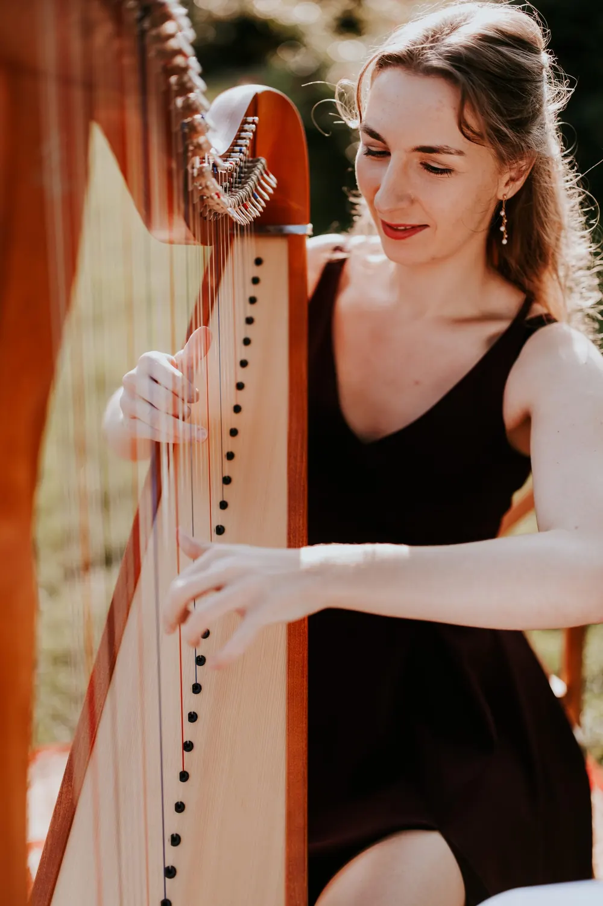
O mnie
Nazywam się Justyna Sasnal. Z zawodu, a przede wszystkim z pasji jestem muzykiem. Jeśli wierzycie w miłość od pierwszego wejrzenia, to właśnie w taki sposób 14 lat temu rozpoczęła się moja przygoda z harfą i gwarantuję, że tak jak mnie oczaruje ona każdego.
Jako harfistka posiadam długoletnie doświadczenie w oprawie muzycznej ślubów, chrzcin, bankietów i innych imprez okolicznościowych. Uświetniam te wyjątkowe chwile grą na harfie celtyckiej, która dzięki temu, że jest niezwykle subtelna, delikatna i romantyczna pasuje wręcz idealnie do charakteru uroczystości zaślubin.
Oferuję Państwu niezapomnianą i profesjonalną oprawę muzyczną ślubu. W swoim repertuarze posiadam zarówno utwory klasyczne jak i chętnie wybierane przez Pary Młode aranżacje popularnych utworów.
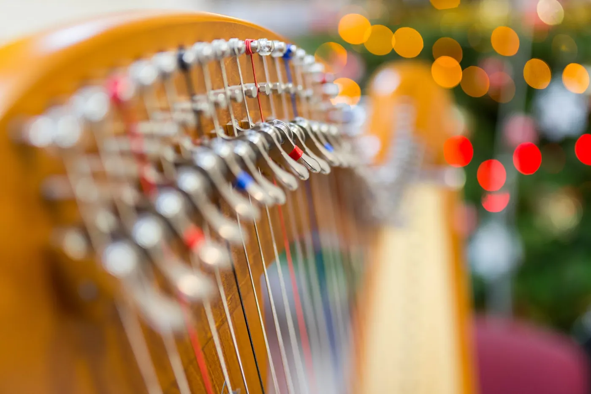
„Harfa pięknie wpasowuje się nie tylko muzycznie, ale również wizualnie w scenerię ślubną.”
Posłuchaj
Repertuar
Muzykę dobieram razem z Parą Młodą do każdego momentu uroczystości – od wejścia, przez przysięgę, po życzenia. Oto kilka propozycji z mojego repertuaru.
Przewijaj dalej, aby zobaczyć kolejne utwory Przesuń w bok, aby zobaczyć więcej utworów
Nie widzisz swojego utworu? Przygotuję aranżację na życzenie – napisz do mnie.
Galeria
Jako harfistka, miałam zaszczyt i przyjemność uświetnić wiele wyjątkowych uroczystości. Harfa pięknie wpasowuje się nie tylko muzycznie, ale również wizualnie w scenerię ślubną. Taka wyjątkowa oprawa muzyczna ślubu z pewnością zapadnie wszystkim w pamięci.
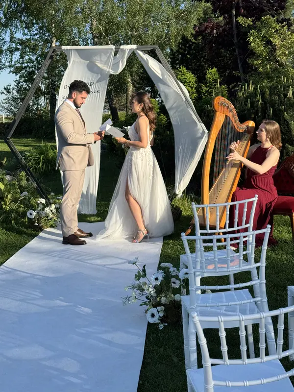
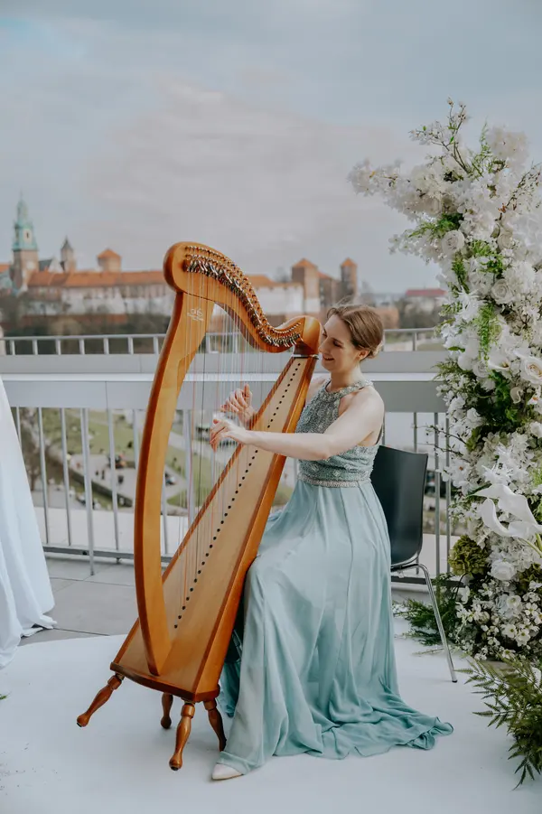
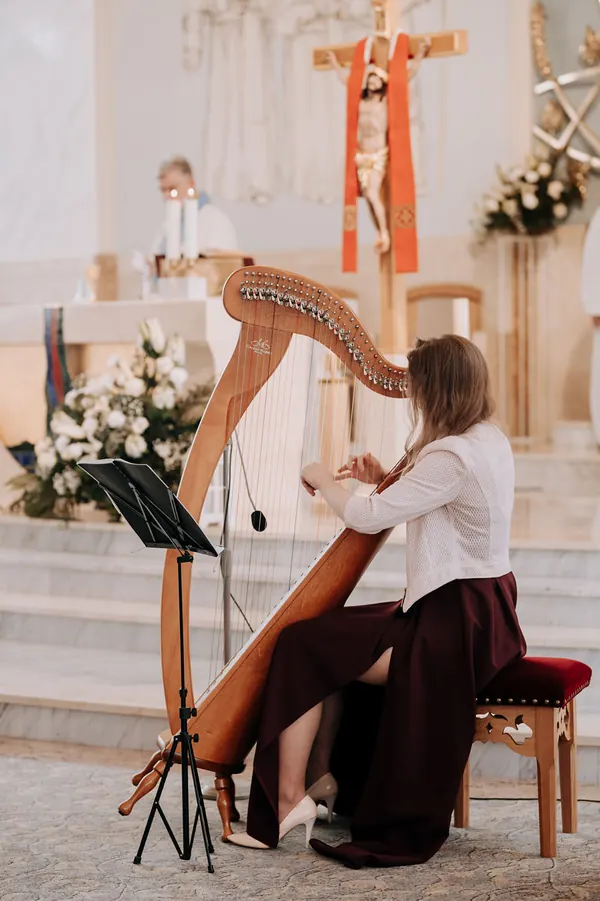
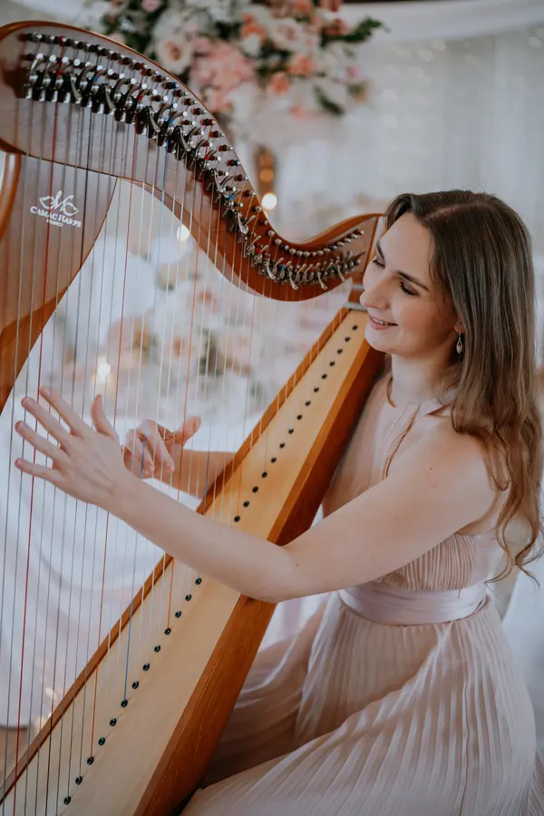
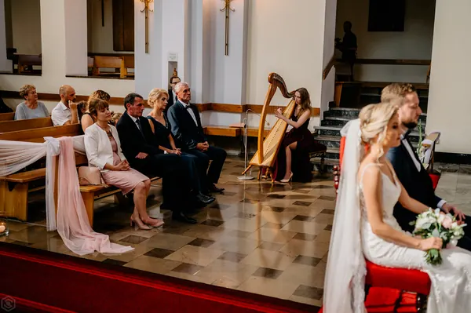
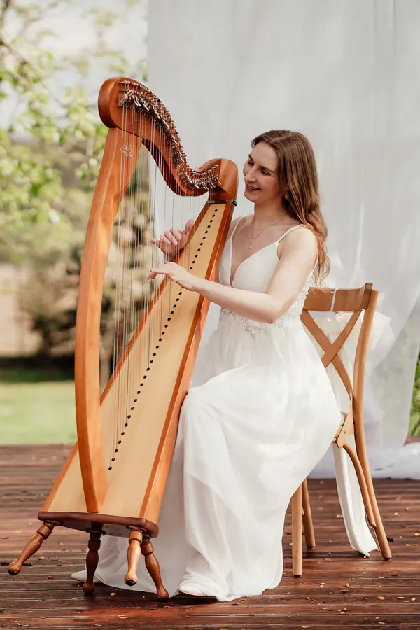
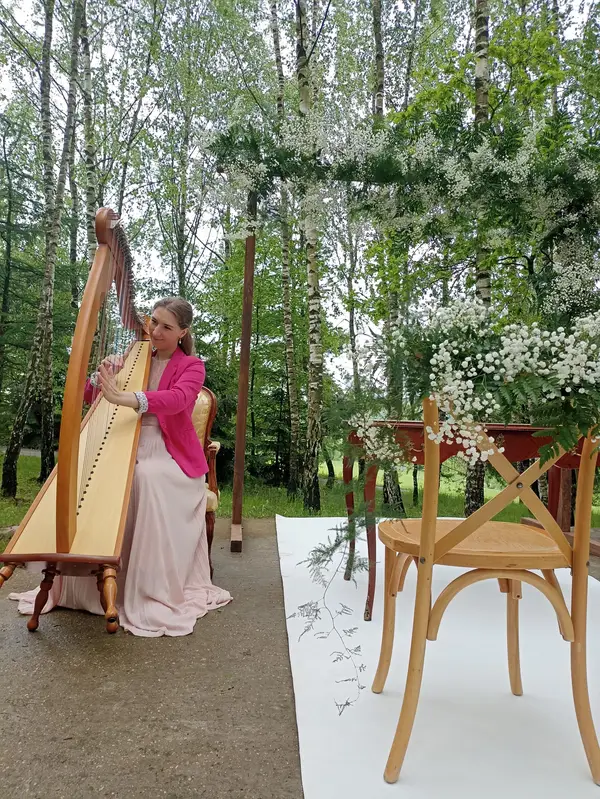
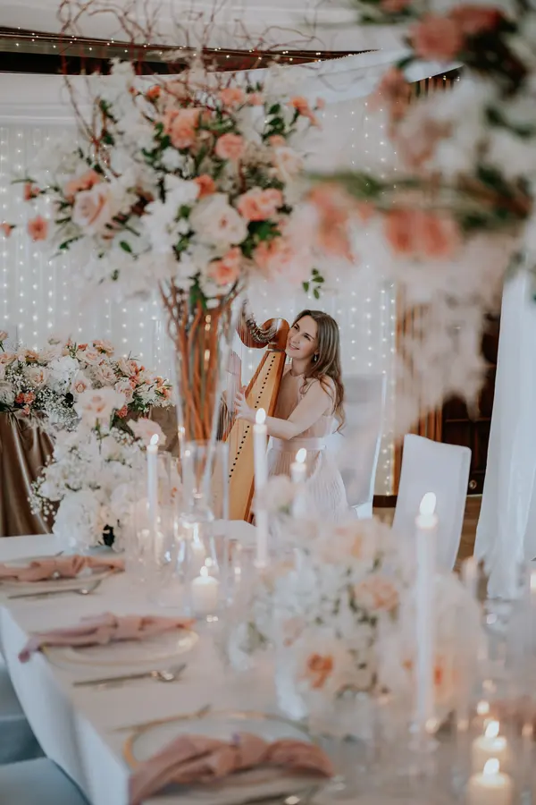
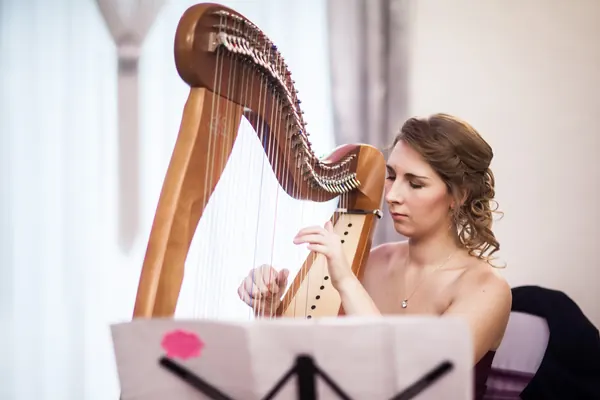
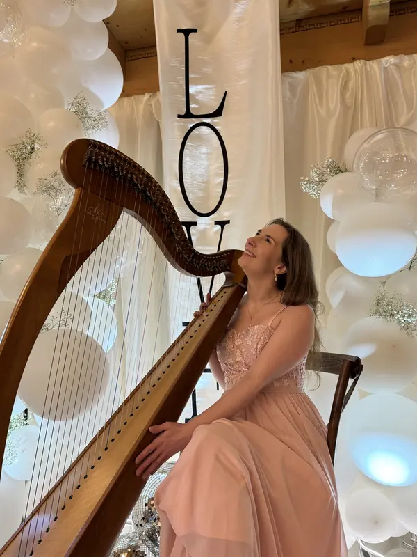
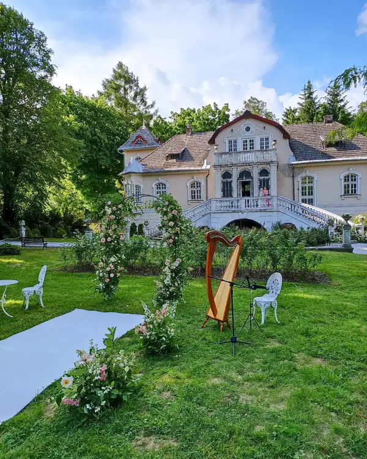
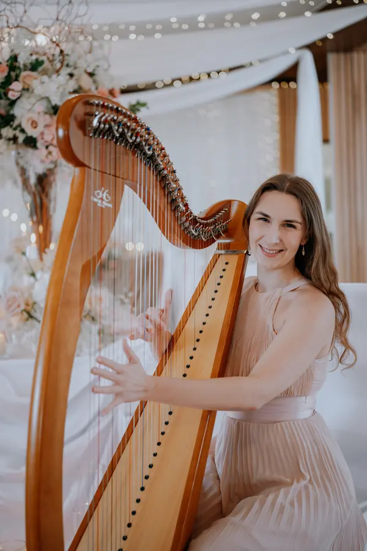
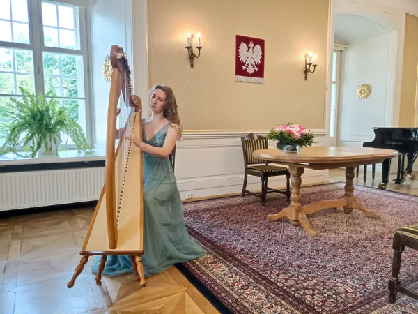
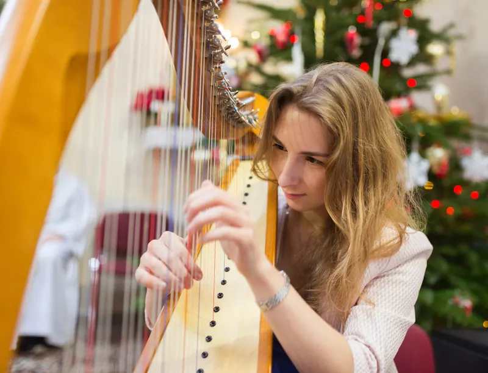
Przewijaj dalej, aby obejrzeć całą galerię Przesuń w bok, aby zobaczyć więcej zdjęć
Opinie
Oprawa muzyczna ślubu jest dla mnie zawsze niezwykle wyjątkowa. To niesamowity dzień, który ma być najpiękniejszym dniem dla Nowożeńców. Zachwyt i wzruszenie Pary Młodej, rodziców Państwa Młodych, gości weselnych, a nawet księdza czy urzędnika jest dla mnie największą satysfakcją. Te wspomnienia pozostają piękną pamiątką na całe życie…
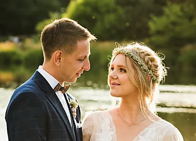
Pani Justyna jest niezwykle utalentowaną osobą 🥰 Podziwiam jej profesjonalne podejście. Sprawiła, że ten wyjątkowy dla Nas dzień był jeszcze piękniejszy. Wszyscy goście byli bardzo wzruszeni i jeszcze długo wspominali piękną grę. Dla Nas ta oprawa muzyczna ślubu jest wspaniałą pamiątką do końca życia i bardzo Ci za to dziękujemy! 😘 Serdecznie polecamy Marry With Harp!!! ❤️
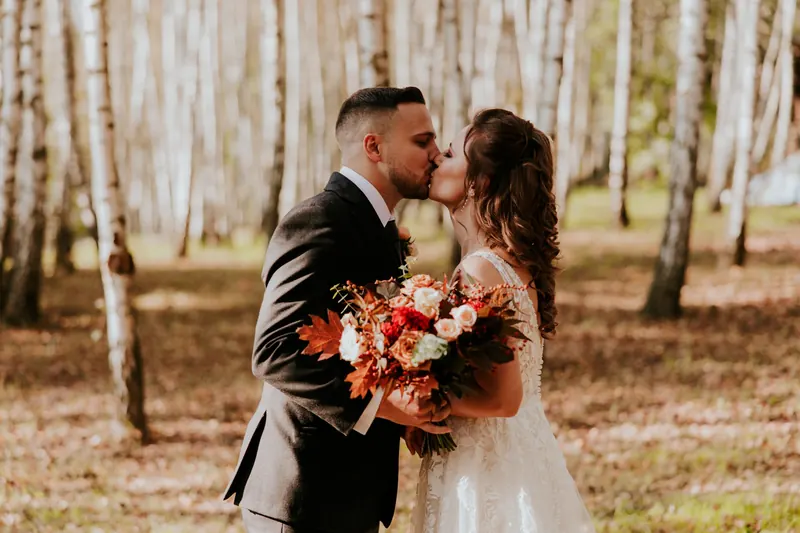
Harfa – instrument niepopularny, niedoceniony. Szalenie elegancki, bajkowy i magiczny. Mieliśmy szczęście, gdy Justyna zgodziła się, że zagra na naszym ślubie, ale nawet w snach nie spodziewaliśmy się, że wyjdzie aż tak pięknie. Daliśmy jej wolną rękę co do oprawy muzycznej ślubu. Wyszło GENIALNIE! ♥️
Goście nadal z rozmarzeniem wspominają płynące dźwięki, które w tle dopełniały ceremonię. A Justyna? Co tu dużo mówić, niektórzy są po prostu do czegoś stworzeni i widać to na pierwszy rzut oka. Patrząc wstecz nie widzimy nikogo innego, ani żadnego innego instrumentu, który byłby w stanie chociaż częściowo równać się z duetem Justyna + harfa. Zdaliśmy się na jej wyczucie i niczego nie żałujemy, najlepsza decyzja przy planowaniu ślubu. Było cudownie. Dziękujemy! ♥️
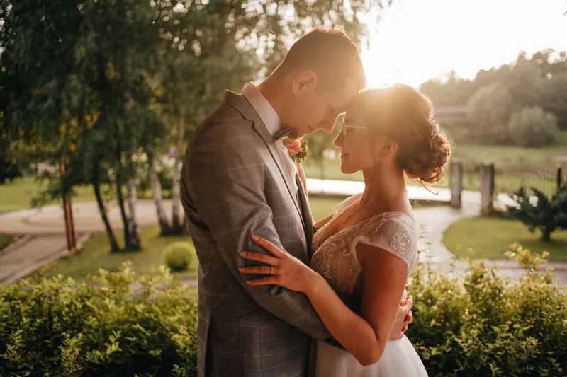
Serdecznie polecamy ♥️ Z grą na harfie Pani Justyny oprawa muzyczna ślubu staje się wyjątkowa i magiczna. Jest to coś cudownego, innego i niepowtarzalnego. Pani Justyna to profesjonalna i bardzo komunikatywna harfistka, a oprawę muzyczną ślubu można całkowicie i bez obaw oddać w jej ręce 🙂 Dzięki Niej długo zapamiętamy piękne utwory i pieśni w jej wykonaniu na naszym ślubie 💓 Ta piękna oprawa muzyczna ślubu sprawiła, że Nasi goście byli zdumieni, zaciekawieni i głęboko poruszeni przepięknym brzmieniem harfy ♥️
Pytania
Zadzwoń, napisz e-mail lub wypełnij formularz kontaktowy. Sprawdzę dostępność w wybranym dniu, omówimy szczegóły uroczystości, a po potwierdzeniu termin jest zarezerwowany tylko dla Was.
Najlepiej kilka miesięcy przed uroczystością – szczególnie w sezonie ślubnym (od maja do września), kiedy soboty szybko się zapełniają. Warto jednak zapytać także o bliższe terminy.
Tak. Gram w Krakowie i całej Małopolsce, a po wcześniejszym ustaleniu również w innych miejscach w Polsce. Koszt dojazdu ustalamy indywidualnie.
Oczywiście. Możecie wybrać utwory z mojego repertuaru albo poprosić o aranżację Waszej ulubionej piosenki. Chętnie doradzę, co sprawdzi się na wejście, podczas przysięgi, podpisywania dokumentów i na wyjście.
Harfa celtycka jest instrumentem akustycznym – w kościele, sali ślubów czy kameralnym plenerze brzmi pięknie bez nagłośnienia. Przy dużej liczbie gości na otwartej przestrzeni warto pomyśleć o delikatnym nagłośnieniu.
Harfa nie może stać w deszczu ani w pełnym słońcu, dlatego na ślub plenerowy potrzebne jest zadaszone lub zacienione miejsce. Wszystko ustalamy wcześniej, razem z planem awaryjnym.
Tak – podczas koktajlu, obiadu weselnego, chrzcin, bankietów i innych uroczystości. Muzyka na harfie to także wyjątkowy prezent dla bliskich, np. na rocznicę czy zaręczyny.
Nie ma tu Twojego pytania? Napisz – chętnie odpowiem.
Kontakt
Marzy Ci się oprawa muzyczna ślubu na harfie? Chcesz zarezerwować termin? Masz pytania o oprawę muzyczną ślubu? A może po prostu chcesz zrobić wyjątkowy prezent swoim bliskim?
Zadzwoń, napisz lub wypełnij formularz kontaktowy.
Kraków · Małopolska · cała Polska po ustaleniu